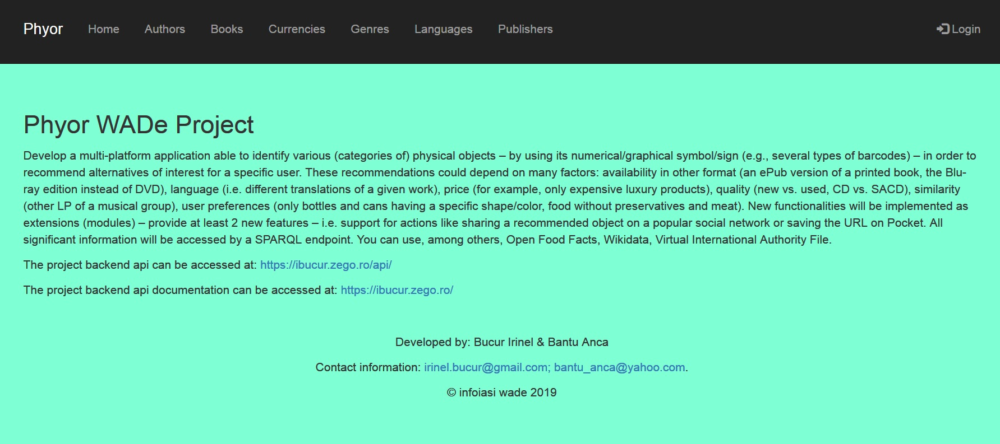

Phyor ((Physical Object Recommender))
Abstract
Phyor (Physical Object Recommender) is a multi-platform application able to identify various (categories of) physical objects using its numerical symbol in order to recommend alternatives of interest for a specific user.
These recommendations could depend on many factors: availability in other formats (an ePub version of a printed book, the Blu-ray edition instead of DVD), language (i.e. different translations of a given work), price (for example, only expensive luxury products), quality (new vs. used, CD vs. SACD), similarity (other LP of a musical group), user preferences (only bottles and cans having a specific shape/color, food without preservatives and meat).
The Front-end application implements 2 new features: support for actions like sharing a recommended object
on a popular social network (Facebook OWL data has been included in the HTML generated product page)
or saving the URL which consists in saving the page in HTML Format on a local device.
All significant information is accessed by using a SPARQL endpoint.
Introduction
Phyor (Physical Object Recommender) is a multi-platform application able to identify various (categories of)
physical objects using its numerical symbol in order to recommend alternatives of interest for a specific user.
The application base inputs are the knowledge base (Open Source D2R) and various third party APIs for the general products information (books).
The project implementation consists on a 3 different components:
Application Architecture
The high level software architecture for the Phyor (Physical Object Recommender) application is described below.
The backend Restful API of the Phyor (Physical Object Recommender) application is composed of several modules, each with a well-defined purpose.
Authors, Books, Genres, Languages, Currencies, Publishers, Users, Error, Response
Each module implements his own repository in order to communicate with the storage system or with the SPARQL endpoint.
The sparql service endpoint gets the product data from the MySQL database using some translation mapping models needed by D2R open source software.
The authors module manages the authors.
The books module manages the books and books recommendations.
The genres module manages the genres the books are available in.
The languages module manages the languages the books are available in.
The currencies module manages the currencies the books price is available in.
The publishers module manages the publishers the books are provided by.
The users module manages the users, authorizations jwt tokens and controls the access rights to all update/add API methods.
Error module is responsible with properly return of a thrown error
Response module is responsible with properly returning the message in the requested format: application/json, application/xml
The Phyor (Physical Object Recommender) application's hight level software architecture is highlighted in the following diagram.

The OpenAPI specification for the Phyor (Physical Object Recommender) application can be found here:
Main flow
User Interface
The end user will get access to the user interface where he will be able to navigate through authors, genres, books and recommendations, etc. in order to view the details about them.
Once the user is logging in, it will have access to other functionality like add/update a resource.
Bellow is described the usage flow for an unauthenticated user:

More usage details about how an editor rights user can perform the maintenance of the project can be views by accessing the presentation movie: Presentation MOVIE.
D2R Open Source Semantic Web Server
The D2R open source software was used in order to create a properly semantic web ontology, model, vocabulary, resources, etc. and it exposes the query service via SPARQL.
The D2R Server can be accessed at: https://ibucur.zego.ro/d2r/ and from there forward the user will be guided to what he can do.
Security Note:
The D2R server accesses the same MySQL database and since via SPARQL an user will be able to make changes into the database, the update operations are controlled easily using a different database connection user with limited rights. This way, all the updates will need to be done using the API where the access control is very well defined.

Restful API
In order to be able to add books, there should be added first the genre, currency the price is provided in, language of the book, author details and the publisher information. There is a constrain which limits the options to add a book product without specifying all the required details.
The api exposes the following methods (described in detail using openApi 3.0.0 format by accessing https://ibucur.zego.ro/) and are accessible in application/json or application/xml response format (controlled by Accept header of the request):
/authors: POST http method to add an author, GET http method to get the list of authors./authors/:authorId: PUT http method to update an author specified by :authorId, GET http method to get the :authorId author resource./currencies: POST http method to add a currency, GET http method to get the list of currencies./currencies/:currencyId: PUT http method to update a currency specified by :currencyId, GET http method to get the :currencyId currency resource./genres: POST http method to add a genre, GET http method to get the list of genres./genres/:genreId: PUT http method to update a genre specified by :genreId, GET http method to get the :genreId genre resource./languages: POST http method to add a language, GET http method to get the list of languages./languages/:languageId: PUT http method to update a language specified by :languageId, GET http method to get the :languageId language resource./publishers: POST http method to add a publisher, GET http method to get the list of publishers./publishers/:publisherId: PUT http method to update a publisher specified by :publisherId, GET http method to get the :publisherId publisher resource./books: POST http method to add a book, GET http method to get the list of books./books/:bookId: PUT http method to update a book specified by :bookId, GET http method to get the :bookId book resource./books/:bookId/recomandations: GET http method to get the :bookId similar books recommendations by the same author, language, genre or publisher. This method uses 4 SPARQL queries in order to retrieve the list of recommendations and combines them into one response.A note should be specified in order to know that the HTML version of a result includes the Facebook OWL data in order to properly be shown on the social network.
Conclusion
Phyor (Physical Object Recommender) is dependable of the D2R data mapping models information about the database structure, foreign keys and constraints in order to be able to show the similarities. Also, by doing it, the search queries when a big database is used will perform much better since it will use the RDS query execution optimization and will require less memory since the full stored data will not be kept in the memory.
Even though the information about the books and other resources are not very complex, a sameAs OWL property (wikidataUri for API) which provides a link to the wikidata resource is available for more details. Up to this level, the project aim was to show the main functionality and working logic.
It can be further extended by adding functionality to include OWL data for other social networks (instagram, twitter) in order to make it share-friendly on other networks.